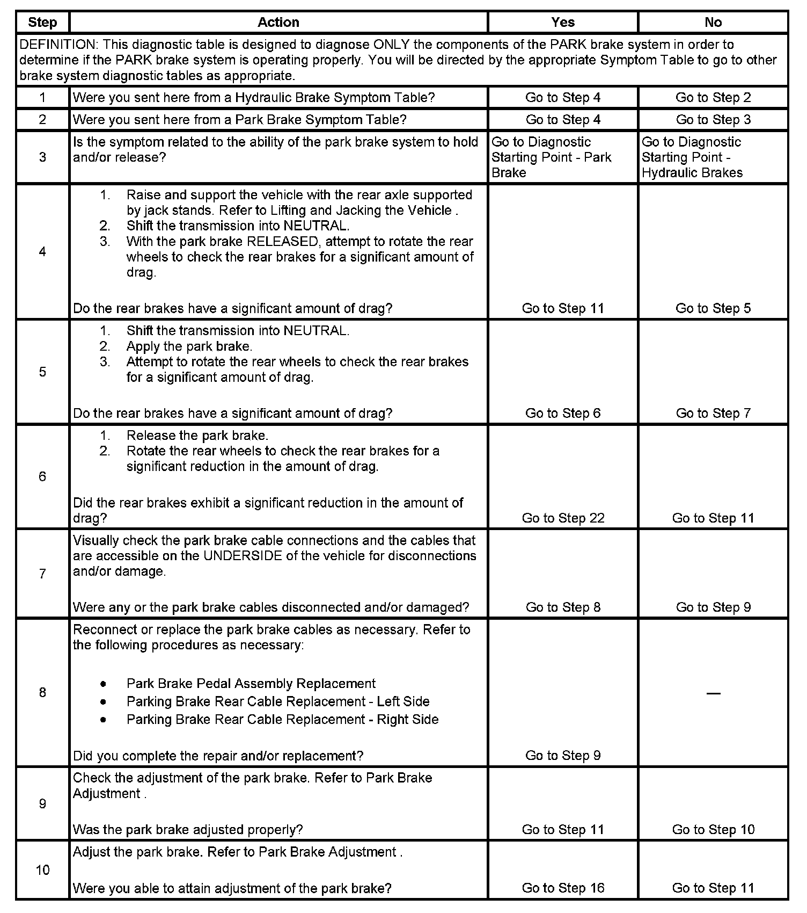
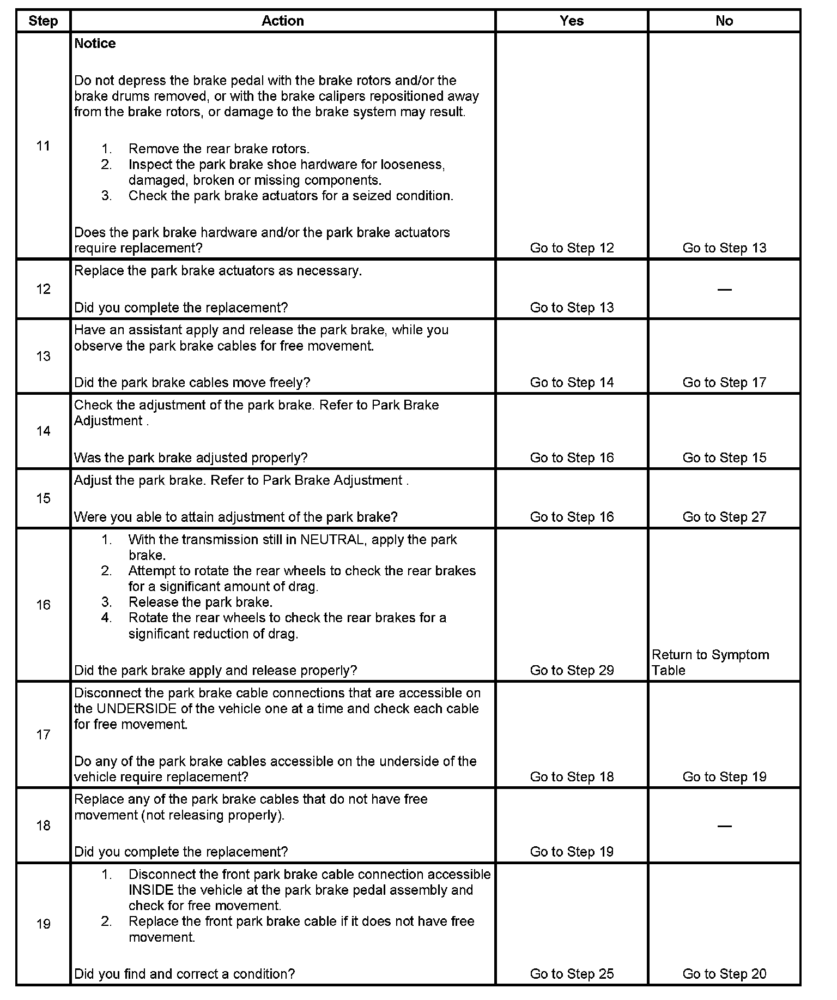
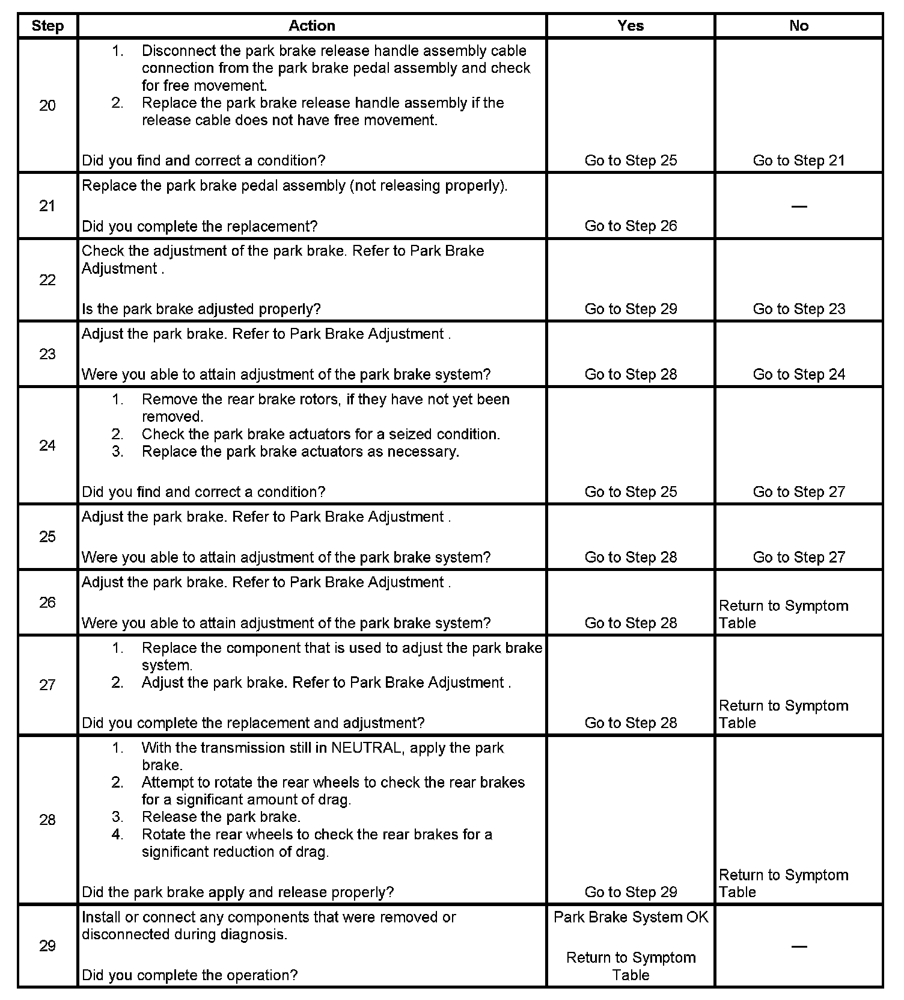

Operation CHARM
: Car repair manuals for everyone.
Home
>>
Cadillac
>>
2007
>>
Escalade ESV AWD V8-6.2L
>>
Repair and Diagnosis
>>
Brakes and Traction Control
>>
Parking Brake System
>>
Testing and Inspection
>>
Component Tests and General Diagnostics
>>
Park Brake System Diagnosis
Park Brake System Diagnosis
Park Brake System Diagnosis
Step 1 - Step 10:

Step 11 - Step 19:

Step 20 - Step 29:
